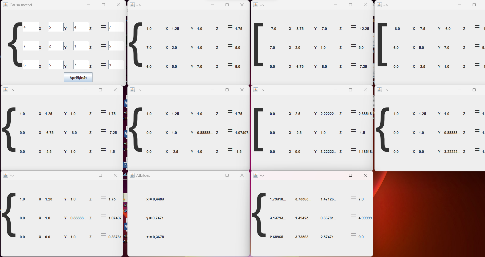

Mani darbi
Mācoties RTC, mēs rakstījām daudz dažādu kodu tādās valodās kā Python, C++, Java un arī Bash. Bet visvairāk man atmiņā palicis darbs, kas tika uzdots nevis programmēšanā, bet gan speciālajā matemātikā. Mums bija jāuzraksta programma lineāro vienādojumu risināšanai, izmantojot Gausa metodi.
